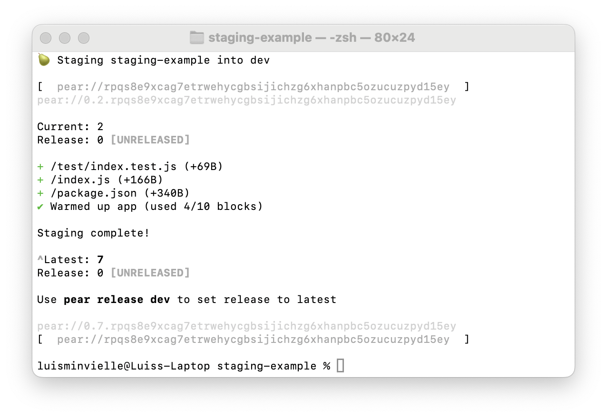
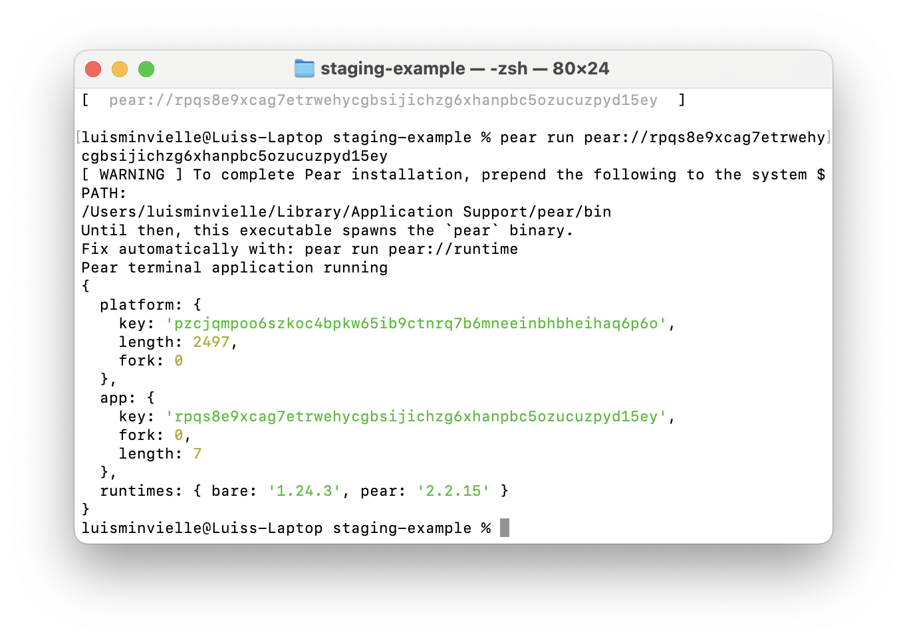
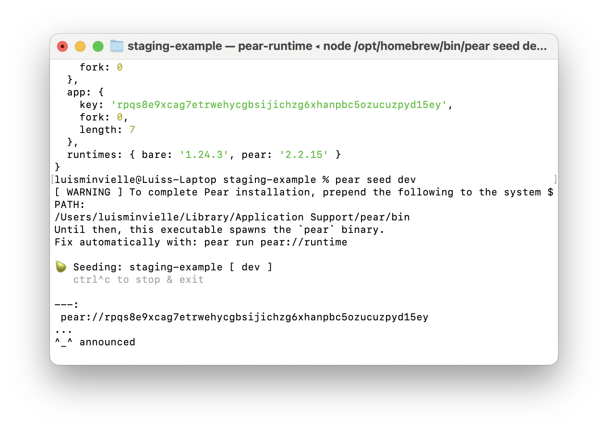

A step-by-step guide to sharing peer-to-peer applications with the Pear runtime
Seeding makes your Pear application available to other peers on the network. When you seed, you announce your app to the DHT (Distributed Hash Table) so that anyone with the app's link can find and run it directly from you, with no server in between.
This guide walks through the full process: from a finished Pear app on your machine to a live, reachable application that peers can run with pear run <link>.
Before you seed, make sure you have the following in place.
Node.js (for npm only; the Pear runtime itself does not depend on Node). Install via nvm on macOS/Linux or nvs on Windows.
Pear CLI installed globally:
npm i -g pearRun pear once after install to complete the initial setup. On first launch, Pear downloads its runtimes and creates the platform directory.
Linux users: install libatomic before running Pear:
# Debian / Ubuntu
sudo apt install libatomic1
# Fedora
sudo dnf install libatomic
# Alpine
sudo apk add libatomicA Pear project with a valid package.json. At minimum, your package.json must include a name field and a pear configuration object:
{
"name": "my-app",
"pear": {
"name": "my-app",
"type": "desktop"
}
}The type field can be "desktop" or "terminal" depending on your application.
A working application. Test it locally with pear dev before you attempt to stage or seed.
If you don't have a Pear app yet and want to test the seeding workflow, create one in under a minute:
mkdir pear-test && cd pear-testCreate package.json:
{
"name": "pear-test",
"pear": {
"name": "pear-test",
"type": "terminal"
}
}Create index.js:
const Pear = require('pear')
console.log('App is running. Key:', Pear.config.key || 'local')We use "type": "terminal" here so the app runs in the terminal with no GUI required. This makes it easy to verify in headless environments like Docker (see Step 4: Testing with Docker below).
Test it locally:
pear dev .You should see App is running. Key: local in the terminal. If that works, move on to Step 1.
When you stage, Pear mirrors your local application files into its Application Storage. The channel name, combined with your app name and your device's unique corestore key, produces a unique application key.
To view the help for pear stage, run pear help stage.
The command signature is pear stage <channel|link> [dir].
By convention, for internal use we use the channel name dev:
pear stage devNo need to specify dir. The command-line current working directory is already set to the project folder.
The channel name can be any valid name. Using dev for local development and internal collaboration, production for public distribution, and pear stage <custom-channel-name> for customizations of the application is a reasonable convention.
Stage outputs a diff of changes (the first time will all be additions) and then the application link. Save this pear:// link. It is your application's permanent address on the network.

Every time you run pear stage with new changes, the version increments. Peers who already have the link will see the updated version on their next connection.
When you stage, Pear also performs a warmup step: it analyzes the application's initialization-to-loaded critical path and stores this metadata alongside the application in an application-dedicated hypercore. This helps the application load faster. All state is local, and only the machine that staged the application can write to this hypercore.
Note on frontend frameworks: Some frontend frameworks load different assets based on whether the
NODE_ENVenvironment variable is set toproduction. If your application has this need, useNODE_ENV=production pear stage devso that the captured critical path consists of production assets.
Before seeding, verify that the staged application works by running it locally from Pear's Application Storage (not from source).
To view the help for pear run, run pear help run.
The command signature is pear run <link>.
Copy the application link that was output when the application was staged and pass it to pear run. For example:
pear run pear://keet4hp5w33...pear run opens the application from Pear's application storage. At this point the application has remained local. In order to share it with other peers, it must be seeded.

Tip: pinning a release. You can optionally mark a stable release point with
pear release <channel>before seeding. After a release,pear run <link>loads the released version by default, even if you stage more changes later. This is useful for production workflows but is not required for seeding.
To share your application with other peers, announce it to the DHT and give them the application link.
To view the help for pear seed, run pear help seed.
The command signature is pear seed <channel|link> [dir].
The staged application can be seeded with:
pear seed devThe application name and channel name are involved in generating the application key, so pear seed uses the project folder to determine the application name from package.json (pear.name or else name field). No need to specify dir here. The command-line current working directory is already set to the project folder.
The pear seed process must stay running for peers to connect. As long as it runs, your machine acts as a seed. If other peers reseed the application, the original process could be closed. Be sure to keep the terminal open while this process is running.

| Flag | Description |
|---|---|
--verbose, -v | Print additional status output |
--json | Output status as newline-delimited JSON (useful for automation) |
--name | Override the application name |
--no-ask | Suppress permission dialogs |
--help, -h | Show help |
pear seed production --verboseThis prints connection events and replication status as peers find and download the app.
You can also seed an application from a different machine (one that did not stage it originally) by passing the full link:
pear seed pear://keet4hp5w33...This fetches the application from the network and starts reseeding it from the current machine. Useful for setting up a second always-on seed, or for distributing the seeding load across multiple machines. See the Discussion: Reseeding section below for more detail.
It's important that the application seeding process from Step 3 is up and running, otherwise peers will not be able to connect and replicate state.
With another machine or friend that has pear installed, execute the pear run <link> command to load the application directly peer-to-peer:
pear run pear://keet4hp5w33...When pear run is executed on the peer machine, there will be a security prompt to add the key to a list of trusted applications by typing "TRUST":
pear run pear://keet4hp5w33...
▲ Key pear://keet4hp5w33... is not known
Be sure that software is trusted before running it
Type "TRUST" to allow execution or anything else to exit
Trust application?The trust dialog is a security mechanism in Pear that appears when the user tries to run an application from an unknown or untrusted key for the first time. In the case that the app is run in detached mode (for example, when clicking on a pear link in the browser), the trust dialog is a GUI.
Note: During development with
pear run --dev, applications are automatically trusted, as they are assumed to be safe for testing purposes. Trust dialog can be suppressed using the--no-askflag withpear run, in which case the application will automatically decline unknown keys.
The application has no state when it's opened for the first time, so the application may show a loader until it's ready to reveal.
The machine running pear seed should show output similar to:
🍐 Seeding: my-app [ dev ]
ctrl^c to stop & exit
->|-
pear://keet4hp5w33...
...
^ announced
<-- peer join 8854f613d911b998...ca88f4e778594c8e4fc480a314dc6d62The peer join line displays the remote public key, in hex, of the peer that executed pear run with the application link.
Once the application is closed on the peer machine, the seeding output will show a corresponding peer drop entry.
If you don't have a second machine available, Docker provides an isolated peer environment. Two terminal windows on the same machine share the same local Pear storage, so the data would already be there. Docker gives you a genuinely separate Pear identity.
docker run -it --rm node:20 bashInside the container:
npm i -g pear
pear # wait for first-run setup to finish
pear run pear://<your-link-from-step-1>No Docker? Any isolated environment works: a VPS, a second user account on your machine, or a friend's laptop. The requirement is a separate Pear corestore, not a separate physical machine.
pear dev # develop and test locally
pear stage dev # bundle and write to channel
pear run pear://<link> # verify from Pear storage on same machine
pear seed dev --verbose # announce to DHT and start seeding
pear run pear://<link> # run from a second peer (Docker, VPS, etc.)When Pear loads an application from a peer, the staged files are sparsely replicated. Assets outside the critical load path are only downloaded from peers on demand. If the application does not request an asset or module during a user session on a given machine, that asset is never replicated to that machine.
Pear's Application Storage can hold very large files (terabytes) that peers can access on demand. Structure your applications so that very large files stay outside the critical load path. Lazily load large payloads, avoid autoplaying large media files, and defer non-essential scripts and styles. These strategies are as effective with Pear (if not more so) than with web browsers.
The command signature for pear seed is pear seed <channel|link> [dir].
If the application was staged on the machine, it will seed the application from the machine. Otherwise, passing an application link to pear seed will reseed the application from that link. For example, given a link pear://keet4hp5w33..., executing pear seed pear://keet4hp5w33... on a peer that didn't originally stage that particular application will result in that process syncing up-to-date data from peers and providing it to peers who need it.
Once an application is being reseeded, the original seeding process can be closed on the staging machine. However, any newly staged changes have to be seeded from that machine for reseeders to pick them up. This means pear seed can be used to "deploy" to reseeders by starting after staging, leaving it running until reseeders have synced, and then stopping the process again.
"No peers found" or slow first connection. The DHT needs a moment to propagate your announcement. Wait 10–20 seconds after starting pear seed before testing from another machine. If peers still can't connect, check that both machines have outbound UDP access. Pear uses Hyperswarm's hole-punching to traverse NATs, but some strict corporate firewalls block UDP entirely.
The seed process exits and the app becomes unreachable. pear seed must keep running. If you close the terminal or the machine goes to sleep, peers lose their seed. For production apps, run pear seed on an always-on machine, inside a process manager like pm2 or systemd:
# Using pm2
pm2 start "pear seed production" --name my-app-seed
# Using systemd (create a unit file)
[Service]
ExecStart=/usr/local/bin/pear seed production
Restart=alwaysPeers get an old version. You staged new changes but forgot to release. Run pear release <channel> to update the release pointer. Peers who run the app will then load the new version.
"Channel not found" on a new machine. You can only pear seed <channel-name> on the machine that staged the app. On a different machine, use the full pear:// link instead: pear seed pear://keet4hp5w33...
Application name mismatch. The key is derived from the combination of app name, channel name, and corestore key. If you change the name field in package.json after staging, the key will change too. Keep the name stable once you start distributing.
dev for your team, production for end users. This keeps unstable changes away from your user base.--json. The --json flag outputs machine-readable status. Pipe it into your monitoring or CI system to track seed health.pear release before pear seed for production channels. This ensures peers get the version you intended, not whatever you last staged.pear run <link> from a separate machine. If it works end-to-end, share the link. If it doesn't, debug before your users hit the issue.